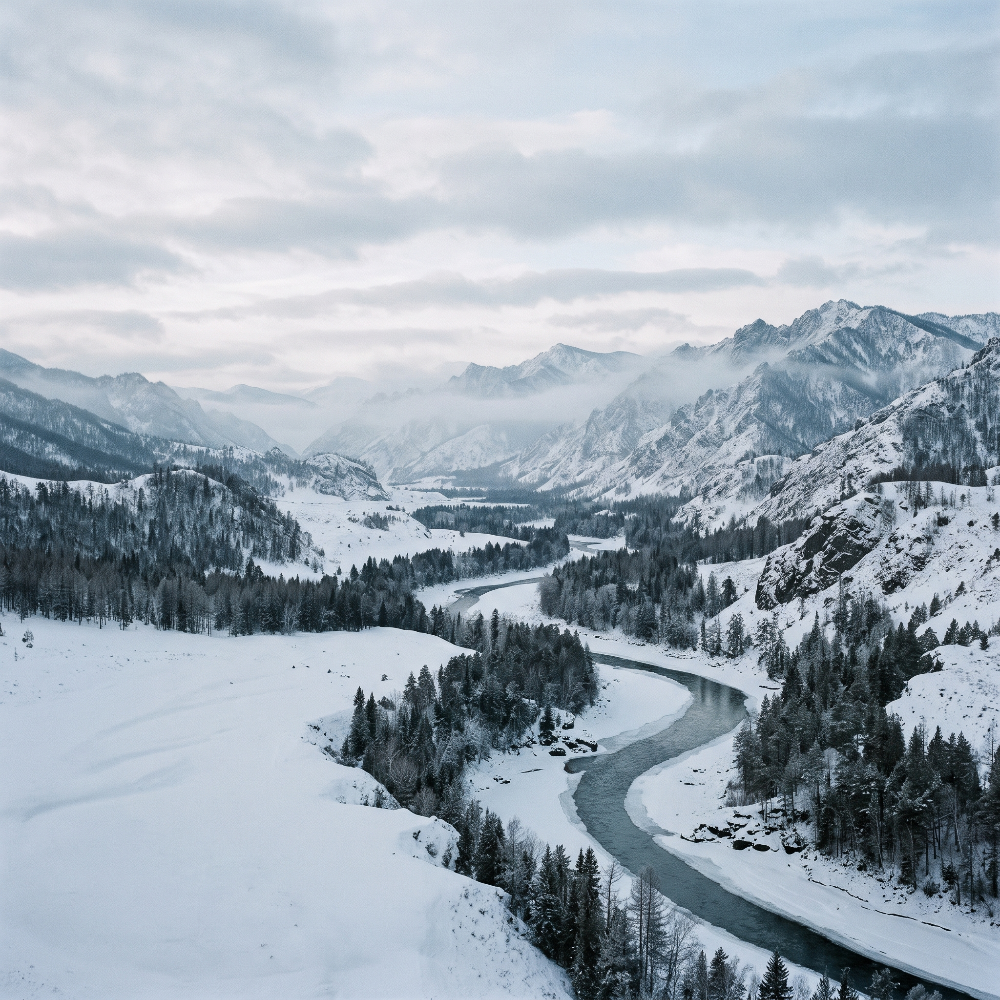
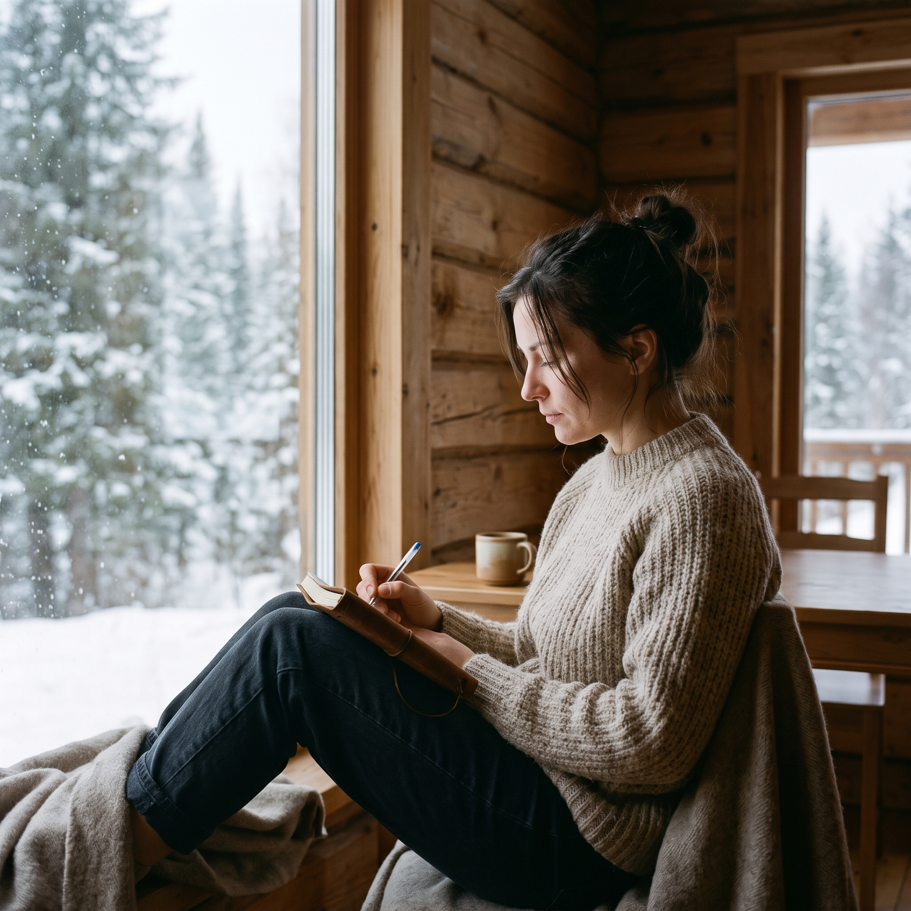
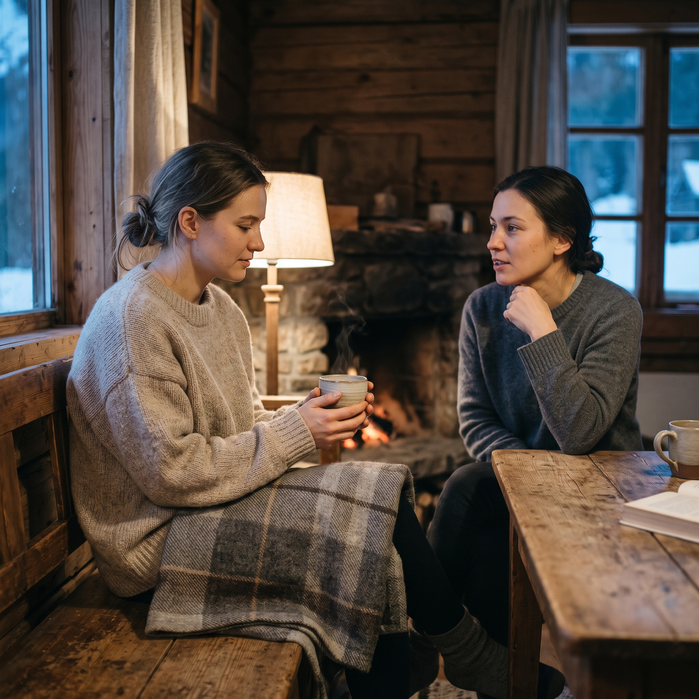
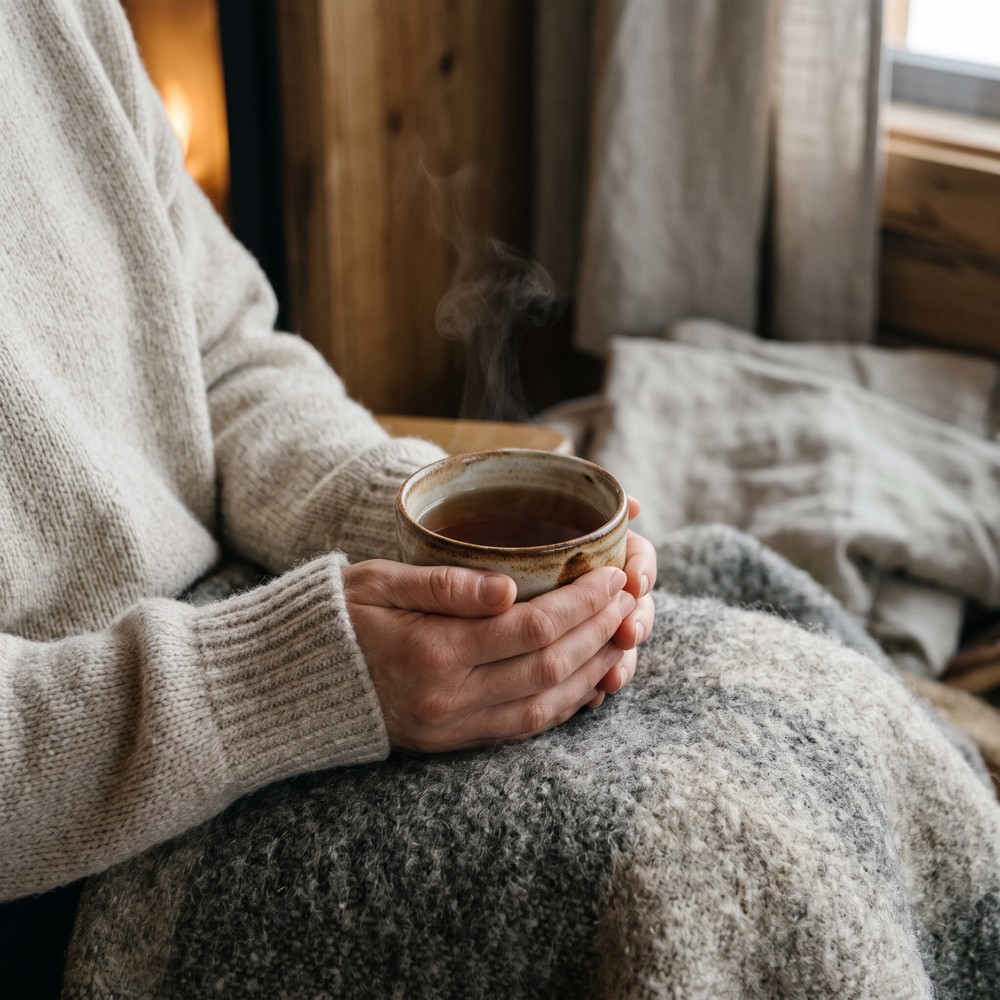

01 · Outside
Cold outside.
02 · The window
Between them,
a window.


03 · Inside
Warm
inside.

Photographs 01–04 · Between Two Temperatures, an editorial series made for this case study. Illustrative: not the actual tour, base or participants.
04 · In the product
The same idea,
as a switch.
The contrast between cold and warmth becomes part of the interface. A single tap takes the visitor from the snowy outdoors to an evening by the fire.
Live site · Trip section · original product photography and copy